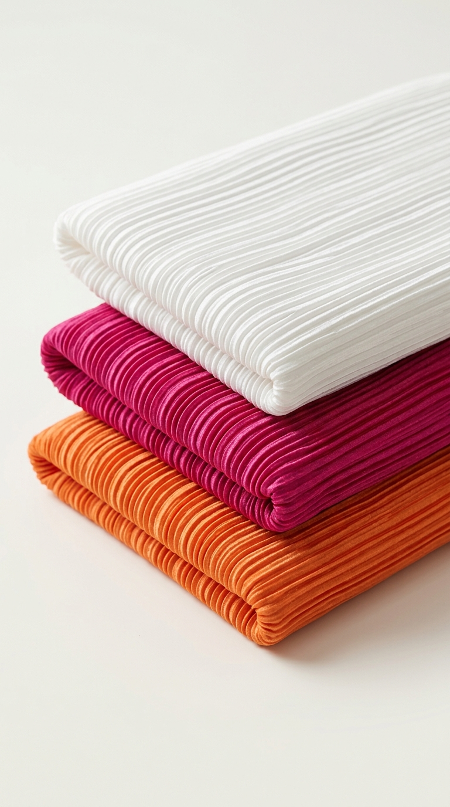

보드레 원단
FDY 계열 원사로
만드는 보드레
보드레는 FDY 계열 원사를 활용하는 인터록 원단입니다. 원사와 가공 조건에 따라 표면의 느낌과 두께감이 달라질 수 있습니다.
찾고 계신 원단의 이름이나 샘플, 알고 계신 조건부터 함께 살펴봅니다.

상담할 때 살펴보는 조건
필요한 보드레의
조건을 알려주세요.
모든 사양을 알고 계시지 않아도 됩니다. 원단명이나 사용 중인 샘플부터 상담할 수 있습니다.
- 원단 샘플
- 사용 중인 원단 또는 필요한 표면
- 가공 · 색상
- 원하는 색과 원단 상태
- 수량 · 일정
- 필요한 양과 희망 시점
보드레 원단을
이야기해 주세요.
필요한 조건과 공급 가능성을 함께 살펴봅니다.